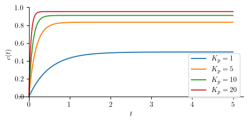
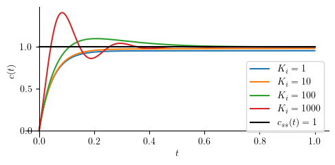

PID Control of a First Order System#
Preparations#
Here we import all necessary libraries.
Show code cell source
from IPython.core.display import HTML
import numpy as np
import matplotlib.pyplot as plt
plt.rcParams.update({
"text.usetex": True,
"font.family": "sans",
"font.size": 10,
})
from sympy import *
from sympy.plotting import plot
from mathprint import *
These are some variables that we are going to use:
\(t, s, \tau, \omega, \omega_n, \zeta\)
from sympy.physics.control.lti import TransferFunction
Kp, Ki, Kd = symbols('K_p K_i K_d', positive=True)
t = symbols('t', positive=True)
s = symbols('s', complex=True)
tau = symbols('tau', positive=True)
omega = symbols("omega", positive=True)
omega_n = symbols('omega_n', positive=True)
zeta = symbols('zeta', positive=True)
Let us define some helper functions.
def laplace(f):
F = laplace_transform(f, t, s, noconds=True)
return F
def ilaplace(F):
f = inverse_laplace_transform(F, s, t)
return f
def frac_to_tf(frac):
return TransferFunction(fraction(frac)[0], fraction(frac)[1], s)
System and the control equations#

The diagram above corresponds to a unity-feedback loop with
and plant
Thus, the closed-loop transfer function is
H = 1 / (tau*s+1)
G = Kp + Ki/s + Kd*s # PID-control
Q = factor(((G*H / (1 + G*H))))
print("first-order system:")
mprint("H(s)=", latex(H))
print("PID-control:")
mprint("G(s)= ", latex(G))
print("the resulting closed-loop system:")
mprint("Q(s)=", latex(Q))
first-order system:
PID-control:
the resulting closed-loop system:
First order system with P-control#
Closed-loop transfer function:
Qp = simplify(Q.subs(([Kd, 0],
[Ki, 0])))
mprint(latex(Qp))
The controlled system remains a first order system. \(K_p\) changes the pole location. New pole location:
Closed-loop poles and zeros#
f = frac_to_tf(Qp)
zerosp = f.zeros()
polesp = f.poles()
print("closed-loop zeros:")
mprint(latex(zerosp))
print("closed-loop poles:")
mprint(latex(polesp))
closed-loop zeros:
closed-loop poles:
Step response#
Let us define some numerical values for our simulations.
tau_ = 1
Kp_ = [1, 5, 10, 20]
We simply perform an inverse Laplace operation to \(C(s)\) and obtain \(c(t)\) as the result. Additionally, we will also compute the steady state-value for the output (\(c_{ss}\)).
cp = ilaplace(Qp * 1/s)
cssp = simplify(limit(cp, t, 'oo'))
c0p = limit(cp, t, 0)
mprintb("c(t) = ", latex(cp))
mprintb("c_{ss} = ", latex(cssp))
Show code cell source
p = [plot(cp.subs(([tau, tau_], [Kp, Kp_[j]])), (t, 0, 5), size=(5, 2.5), ylabel='$c(t)$', show=False, legend=True) for j in range(len(Kp_))]
for j in range(len(p)):
p[j][0].label = "$K_p=" + str(Kp_[j]) + "$"
if j > 0:
p[0].append(p[j][0])
p[0].show()

First-order system with PD-control#
Closed-loop transfer function:
Qpd = simplify(Q.subs(Ki, 0))
mprint(latex(Qpd))
Closed-loop poles and zeros#
f = frac_to_tf(Qpd)
zerospd = f.zeros()
polespd = f.poles()
print("closed-loop zeros:")
mprint(latex(zerospd))
print("closed-loop zeros:")
mprint(latex(polespd))
closed-loop zeros:
closed-loop zeros:
Step response#
We simply perform an inverse Laplace operation to \(C(s)\) and obtain \(c(t)\) as the result. Additionally, we will also compute the steady state-value for the output (\(c_{ss}\)).
A phenomenon that can be observed in a derivative control is the “kick” that happens when a step input is applied to the controlled system. Because of the kick, system output does not start from zero.
cpd = logcombine(ilaplace(Qpd * 1/s))
csspd = limit(cpd, t, 'oo')
c0pd = limit(cpd, t, 0)
mprintb("c(t) = ", latex(cpd))
mprintb("c_{ss} = ", latex(csspd))
mprintb("c(0) = ", latex(c0pd))
Next, we set up arbitrary numerical values to some parameters and run sumulate the controlled system.
tau_ = 1
Kp_ = 20
Kd_ = [0.1, 0.5, 1]
Show code cell source
p = [plot(cpd.subs(([tau, tau_], [Kp, Kp_],[Kd, Kd_[j]])), (t, 0, .5), size=(5, 2.5), ylabel='$c(t)$', show=False, legend=True, axis_center=[0,0]) for j in range(len(Kd_))]
for j in range(len(p)):
p[j][0].label = "$K_d=" + str(Kd_[j]) + "$"
if j > 0:
p[0].append(p[j][0])
q = plot(csspd.subs(Kp, Kp_), (t, 0, .5), line_color='k', show=False)
q[0].label = "$ c_{ss} (t) = " + latex(csspd.subs(Kp, Kp_)) + " $"
p[0].append(q[0])
p[0].show()
First-order system with PI-control#
Closed-loop transfer function:
Qpi = simplify(Q.subs(Kd, 0))
mprintb(latex(Qpi))
Closed-loop poles and zeros#
f = frac_to_tf(Qpi)
zerospi = f.zeros()
polespi = f.poles()
print("closed-loop zeros:")
mprint(latex(zerospi))
print("closed-loop zeros:")
mprint(latex(polespi))
closed-loop zeros:
closed-loop zeros:
Step response#
We simply perform an inverse Laplace operation to \(C(s)\) and obtain \(c(t)\) as the result. Additionally, we will also compute the steady state-value for the output (\(c_{ss}\)).
cpi = ilaplace(Qpi * 1/s)
cpi = sum([simplify(cpi.args[j]) for j in range(len(cpi.args))])
csspi = limit(cpi, t, 'oo')
mprintb("c(t) = ", latex(cpi))
mprintb("c_{ss} = ", latex(csspi))
Next, we set up arbitrary numerical values to some parameters and run sumulate the controlled system.
tau_ = 1
Kp_ = 20
Ki_ = [1, 10, 100, 1000]
Kd_ = 0
Show code cell source
p = [plot(cpi.subs(([tau, tau_], [Kp, Kp_],[Ki, Ki_[j]])), (t, 0, 1), size=(5, 2.5), ylabel='$c(t)$', show=False, legend=True) for j in range(len(Ki_))]
for j in range(len(p)):
p[j][0].label = "$K_i=" + str(Ki_[j]) + "$"
if j > 0:
p[0].append(p[j][0])
q = plot(csspi.subs(Kp, Kp_), (t, 0, 1), line_color='k', show=False)
q[0].label = "$ c_{ss} (t) = " + latex(csspi.subs(Kp, Kp_)) + " $"
p[0].append(q[0])
p[0].show()

First-order system with PID-control#
f = frac_to_tf(Q)
zerospid = f.zeros()
polespid = f.poles()
print("Closed-loop zeros:")
mprint(latex(zerospid))
print("Closed-loop poles:")
mprint(latex(polespid))
Closed-loop zeros:
Closed-loop poles:
cpid = logcombine(ilaplace(Q * 1/s))
csspid = limit(cpid, t, 'oo')
c0pid = limit(cpid, t, 0)
mprintb("c(t) = ", latex(cpid))
mprintb("c_{ss} = ", latex(csspid))
mprintb("c(0) = ", latex(c0pid))
Summary#
Show code cell source
from pandas import DataFrame, set_option
from IPython.display import Markdown, display
def makelatex(args):
return ["${}$".format(latex(a)) for a in args]
descs = ["P",
"PD",
"PI",
"PID"]
css_label = [cssp, csspd, csspi, csspid]
c_label = [cp, cpd, cpi, cpid]
cl_zeros = [zerosp, zerospd, zerospi, zerospid]
cl_poles = [polesp, polespd, polespi, polespid]
kicks = [0, c0pd, 0, c0pid]
dic1 = {'' : makelatex(descs),
'$c_{ss}$' : makelatex(css_label),
'$c(0)$' : makelatex(kicks)}
dic2 = {'' : makelatex(descs),
'Zeros' : makelatex(cl_zeros),
'Poles' : makelatex(cl_poles)}
df1 = DataFrame(dic1)
df2 = DataFrame(dic2)
Initial and steady-state output for unit-step input#
Show code cell source
Markdown(df1.to_markdown(index=False))
\(c_{ss}\) |
\(c(0)\) |
|
|---|---|---|
\(\mathtt{\text{P}}\) |
\(\frac{K_{p}}{K_{p} + 1}\) |
\(0\) |
\(\mathtt{\text{PD}}\) |
\(\frac{K_{p}}{K_{p} + 1}\) |
\(\frac{K_{d}}{K_{d} + \tau}\) |
\(\mathtt{\text{PI}}\) |
\(1\) |
\(0\) |
\(\mathtt{\text{PID}}\) |
\(1\) |
\(\frac{K_{d}}{K_{d} + \tau}\) |
Zeros and poles#
Show code cell source
Markdown(df2.to_markdown(index=False))
Zeros |
Poles |
|
|---|---|---|
\(\mathtt{\text{P}}\) |
\(\left[ \right]\) |
\(\left[ - \frac{K_{p} + 1}{\tau}\right]\) |
\(\mathtt{\text{PD}}\) |
\(\left[ - \frac{K_{p}}{K_{d}}\right]\) |
\(\left[ - \frac{K_{p} + 1}{K_{d} + \tau}\right]\) |
\(\mathtt{\text{PI}}\) |
\(\left[ - \frac{K_{i}}{K_{p}}\right]\) |
\(\left[ - \frac{K_{p} + 1}{2 \tau} - \frac{\sqrt{- 4 K_{i} \tau + K_{p}^{2} + 2 K_{p} + 1}}{2 \tau}, \ - \frac{K_{p} + 1}{2 \tau} + \frac{\sqrt{- 4 K_{i} \tau + K_{p}^{2} + 2 K_{p} + 1}}{2 \tau}\right]\) |
\(\mathtt{\text{PID}}\) |
\(\left[ - \frac{K_{p}}{2 K_{d}} - \frac{\sqrt{- 4 K_{d} K_{i} + K_{p}^{2}}}{2 K_{d}}, \ - \frac{K_{p}}{2 K_{d}} + \frac{\sqrt{- 4 K_{d} K_{i} + K_{p}^{2}}}{2 K_{d}}\right]\) |
\(\left[ - \frac{K_{p} + 1}{2 \left(K_{d} + \tau\right)} - \frac{\sqrt{- 4 K_{d} K_{i} - 4 K_{i} \tau + K_{p}^{2} + 2 K_{p} + 1}}{2 \left(K_{d} + \tau\right)}, \ - \frac{K_{p} + 1}{2 \left(K_{d} + \tau\right)} + \frac{\sqrt{- 4 K_{d} K_{i} - 4 K_{i} \tau + K_{p}^{2} + 2 K_{p} + 1}}{2 \left(K_{d} + \tau\right)}\right]\) |
Interactive PID Response of a First-Order Plant#
This section demonstrates the step response of a first-order plant controlled using a PID controller. The goal is to observe how the controller gains \(K_p\), \(K_i\), and \(K_d\) affect the closed-loop response.
The plant is modeled as a standard first-order system with a time constant of \(\tau\).
The notebook then plots the response \(c(t)\) to a unit-step input.
The notebook also calculates common time-domain response characteristics, including:
rise time,
peak time,
maximum overshoot,
settling time using the 5% band,
settling time using the 2% band,
closed-loop pole locations.
Required Python Packages
This notebook uses ipywidgets for interactive sliders. If ipywidgets is not installed, run:
pip install ipywidgets
Show code cell source
# Interactive PID / PI / PD response of a first-order plant
# This version uses derived closed-form equations only.
#
# Plant:
# H(s) = 1 / (tau*s + 1)
#
# Controller:
# G(s) = Kp + Ki/s + Kd*s
#
# Cases:
# Ki > 0 : PID / PI case, second-order closed-loop response
# Ki = 0 : PD / P case, first-order closed-loop response
#
# PI is obtained by setting Kd = 0 and Ki > 0.
# PD is obtained by setting Ki = 0 and Kd > 0.
# P is obtained by setting Ki = 0 and Kd = 0.
import numpy as np
import matplotlib.pyplot as plt
import ipywidgets as widgets
from IPython.display import display
from scipy.optimize import brentq
# Safer for Binder/Colab because it avoids calling a system LaTeX executable.
plt.rcParams["text.usetex"] = False
def closed_loop_denominator_pid_fo(Kp, Ki, Kd, tau):
"""
PID/PI closed-loop denominator for the first-order plant:
(tau + Kd)*s^2 + (1 + Kp)*s + Ki
"""
return [
tau + Kd,
1.0 + Kp,
Ki
]
def closed_loop_denominator_pd_fo(Kp, Kd, tau):
"""
PD/P closed-loop denominator for the first-order plant:
(tau + Kd)*s + (1 + Kp)
"""
return [
tau + Kd,
1.0 + Kp
]
def closed_loop_poles_and_a_pid_fo(Kp, Ki, Kd, tau):
"""
Compute PID/PI closed-loop poles p_i, then define a_i = -p_i.
"""
den = closed_loop_denominator_pid_fo(Kp, Ki, Kd, tau)
poles = np.roots(den)
a = -poles
return poles, a, den
def closed_loop_pole_b_pd_fo(Kp, Kd, tau):
"""
Compute the PD/P closed-loop pole p = -b.
"""
den = closed_loop_denominator_pd_fo(Kp, Kd, tau)
b = (1.0 + Kp) / (tau + Kd)
pole = -b
return np.array([pole]), b, den
def closed_form_pid_fo_response(t, Kp, Ki, Kd, tau, a):
"""
Derived PID/PI closed-form unit-step response for the first-order plant.
For Ki > 0:
C(s) =
(Kd*s^2 + Kp*s + Ki)
-------------------------------------------------
s*((tau+Kd)*s^2 + (1+Kp)*s + Ki)
If:
((tau+Kd)*s^2 + (1+Kp)*s + Ki)
=
(tau+Kd)*(s+a1)*(s+a2)
then:
c(t)
=
Ki/((tau+Kd)*a1*a2)
+ (Kd*a1^2 - Kp*a1 + Ki)
/ ((tau+Kd)*a1*(a1-a2)) * exp(-a1*t)
+ (Kd*a2^2 - Kp*a2 + Ki)
/ ((tau+Kd)*a2*(a2-a1)) * exp(-a2*t)
This assumes a1 and a2 are distinct.
"""
t = np.asarray(t, dtype=float)
A = tau + Kd
a1, a2 = a
c_inf = Ki / (A * a1 * a2)
term_a1 = ((Kd*a1**2 - Kp*a1 + Ki) * np.exp(-a1*t)) / (
A * a1 * (a1 - a2)
)
term_a2 = ((Kd*a2**2 - Kp*a2 + Ki) * np.exp(-a2*t)) / (
A * a2 * (a2 - a1)
)
c = c_inf + term_a1 + term_a2
return np.real_if_close(c, tol=1000)
def closed_form_pd_fo_response(t, Kp, Kd, tau, b):
"""
Derived PD/P closed-form unit-step response for the first-order plant.
For Ki = 0:
C(s) =
(Kd*s + Kp)
------------------------------
s*((tau+Kd)*s + (1+Kp))
Let:
b = (1 + Kp)/(tau + Kd)
Then:
c(t)
=
Kp/((tau+Kd)*b)
+
(Kd*b - Kp)/((tau+Kd)*b) * exp(-b*t)
"""
t = np.asarray(t, dtype=float)
A = tau + Kd
c_inf = Kp / (A * b)
transient = ((Kd*b - Kp) * np.exp(-b*t)) / (A * b)
c = c_inf + transient
return np.real_if_close(c, tol=1000)
def first_crossing_time(func, t_grid, y_grid, level):
"""Find first time where y(t) crosses a specified level."""
f_grid = y_grid - level
for k in range(len(t_grid) - 1):
if f_grid[k] == 0:
return t_grid[k]
if f_grid[k] * f_grid[k + 1] < 0:
t_left = t_grid[k]
t_right = t_grid[k + 1]
try:
return brentq(
lambda tau_: func(tau_) - level,
t_left,
t_right
)
except ValueError:
return None
return None
def settling_time(t, y, y_final, tol):
"""Settling time: first time after which response stays inside ±tol band."""
lower = (1.0 - tol) * y_final
upper = (1.0 + tol) * y_final
inside = (y >= lower) & (y <= upper)
for k in range(len(t)):
if np.all(inside[k:]):
return t[k]
return None
def roots_are_distinct(values, tol=1e-7):
"""Check whether root constants are sufficiently distinct."""
values = np.asarray(values)
for i in range(len(values)):
for j in range(i + 1, len(values)):
if abs(values[i] - values[j]) <= tol:
return False
return True
def plot_pid_fo_response(Kp=10.0, Ki=3.0, Kd=1.0,
tau=1.0, t_final=20.0):
# Basic validation
if tau <= 0:
print("Please use tau > 0.")
return
if Kp < 0:
print("Please use Kp >= 0.")
return
if Ki < 0:
print("Please use Ki >= 0.")
return
if Kd < 0:
print("Please use Kd >= 0.")
return
if tau + Kd <= 0:
print("Please use tau + Kd > 0.")
return
if t_final <= 0:
print("Please use t final > 0.")
return
t = np.linspace(0, t_final, 2500)
# ------------------------------------------------------------
# Case 1: PID / PI
# ------------------------------------------------------------
if Ki > 0:
controller_type = "PID" if Kd > 0 else "PI"
poles, a, den = closed_loop_poles_and_a_pid_fo(Kp, Ki, Kd, tau)
stable = np.all(np.real(poles) < 0)
if not roots_are_distinct(a):
print("The closed-loop poles are repeated or too close.")
print("The derived PID/PI partial-fraction equation assumes distinct poles.")
print("Try changing Kp, Ki, Kd, or tau slightly.")
return
c_complex = closed_form_pid_fo_response(t, Kp, Ki, Kd, tau, a)
c = np.real(c_complex)
c_inf_from_poles = Ki / ((tau + Kd) * np.prod(a))
c_inf = float(np.real_if_close(c_inf_from_poles))
def c_of_t(tau_):
y = closed_form_pid_fo_response(
np.array([tau_]), Kp, Ki, Kd, tau, a
)
return float(np.real(y[0]))
pole_constants_name = "a_i = -p_i"
# ------------------------------------------------------------
# Case 2: PD / P
# ------------------------------------------------------------
else:
controller_type = "PD" if Kd > 0 else "P"
poles, b, den = closed_loop_pole_b_pd_fo(Kp, Kd, tau)
stable = np.all(np.real(poles) < 0)
c_complex = closed_form_pd_fo_response(t, Kp, Kd, tau, b)
c = np.real(c_complex)
c_inf_from_poles = Kp / ((tau + Kd) * b)
c_inf = float(np.real_if_close(c_inf_from_poles))
def c_of_t(tau_):
y = closed_form_pd_fo_response(
np.array([tau_]), Kp, Kd, tau, b
)
return float(np.real(y[0]))
pole_constants_name = "b = -p"
# Rise time:
# Same convention as the second-order notebook:
# first time c(t) reaches the unit reference c = 1.
tr = first_crossing_time(c_of_t, t, c, 1.0)
# First crossing of 95% and 98% of final value
t95 = first_crossing_time(c_of_t, t, c, 0.95*c_inf)
t98 = first_crossing_time(c_of_t, t, c, 0.98*c_inf)
# Settling time using 5% and 2% bands
Ts_5 = settling_time(t, c, c_inf, 0.05)
Ts_2 = settling_time(t, c, c_inf, 0.02)
# Peak information
peak_index = np.argmax(c)
t_peak = t[peak_index]
c_peak = c[peak_index]
Mp = c_peak - c_inf
if abs(c_inf) > 1e-12:
percent_overshoot = 100.0 * Mp / c_inf
else:
percent_overshoot = np.nan
# Plot
plt.figure(figsize=(9, 5))
plt.plot(t, c, linewidth=2,
label=rf"$c(t)$ from derived {controller_type} equation")
plt.axhline(1.0, linestyle="--", linewidth=1, label="unit reference")
# Settling bands around c_inf
plt.axhline(1.05*c_inf, linestyle="--", linewidth=1,
label=r"$\pm 5\%$ band around $c(\infty)$")
plt.axhline(0.95*c_inf, linestyle="--", linewidth=1)
plt.axhline(1.02*c_inf, linestyle="-.", linewidth=1,
label=r"$\pm 2\%$ band around $c(\infty)$")
plt.axhline(0.98*c_inf, linestyle="-.", linewidth=1)
# Rise time marker
if tr is not None:
plt.axvline(tr, linestyle="--", linewidth=1,
label=rf"$t_r={tr:.3g}$")
plt.plot(tr, 1.0, "o")
# 95% and 98% first-crossing markers
if t95 is not None:
plt.plot(t95, 0.95*c_inf, "o", label=rf"$t_{{95}}={t95:.3g}$")
if t98 is not None:
plt.plot(t98, 0.98*c_inf, "o", label=rf"$t_{{98}}={t98:.3g}$")
# Peak marker
plt.plot(t_peak, c_peak, "s", label=rf"peak at $t_p={t_peak:.3g}$")
# Settling time markers
if Ts_5 is not None:
plt.axvline(Ts_5, linestyle="--", linewidth=1,
label=rf"$T_{{s,5\%}}={Ts_5:.3g}$")
if Ts_2 is not None:
plt.axvline(Ts_2, linestyle="-.", linewidth=1,
label=rf"$T_{{s,2\%}}={Ts_2:.3g}$")
plt.xlabel("Time, t")
plt.ylabel("Response, c(t)")
plt.title(f"{controller_type}-Controlled First-Order Plant Using Derived Closed-Form Equation")
plt.grid(True)
plt.legend(loc="best")
plt.show()
# Print information
print(f"Controller type: {controller_type}")
print()
if Ki > 0:
print("Closed-loop characteristic polynomial:")
print("(tau + Kd)*s^2 + (1 + Kp)*s + Ki")
print(f"tau + Kd = {den[0]:.6g}")
print(f"1 + Kp = {den[1]:.6g}")
print(f"Ki = {den[2]:.6g}")
else:
print("Closed-loop characteristic polynomial:")
print("(tau + Kd)*s + (1 + Kp)")
print(f"tau + Kd = {den[0]:.6g}")
print(f"1 + Kp = {den[1]:.6g}")
print()
print("Closed-loop poles p_i:")
for k, p in enumerate(poles, start=1):
print(f"p{k} = {p:.6g}")
print()
print(f"Values used in the derived equation, {pole_constants_name}:")
if Ki > 0:
for k, ak in enumerate(a, start=1):
print(f"a{k} = {ak:.6g}")
else:
print(f"b = {b:.6g}")
print()
print(f"Stable? = {stable}")
print(f"tau = {tau:.6g}")
print()
if Ki > 0:
print(f"Product a1*a2 = {np.prod(a):.6g}")
print(f"Ki/(tau+Kd) = {Ki/(tau+Kd):.6g}")
print(f"c(infty) from Ki/((tau+Kd)*a1*a2) = {c_inf:.6g}")
print("Note: PID/PI control gives c(infty)=1 if stable and Ki>0.")
else:
print(f"b = {b:.6g}")
print(f"c(infty) from Kp/((tau+Kd)*b) = {c_inf:.6g}")
print("Equivalent: c(infty) = Kp/(1+Kp).")
print("Note: PD/P control does not generally give c(infty)=1.")
print()
print(f"c(0+) = {c[0]:.6g}")
print(f"max c(t) = {c_peak:.6g}")
print(f"t_peak = {t_peak:.6g}")
print(f"Mp = {Mp:.6g}")
print(f"%OS = {percent_overshoot:.6g} %")
print()
if tr is not None:
print(f"rise time tr, c(t)=1 = {tr:.6g}")
else:
print("rise time tr, c(t)=1 = not found in plotted time range")
if t95 is not None:
print(f"t95 first crossing = {t95:.6g}")
else:
print("t95 first crossing = not found in plotted time range")
if t98 is not None:
print(f"t98 first crossing = {t98:.6g}")
else:
print("t98 first crossing = not found in plotted time range")
if Ts_5 is not None:
print(f"settling time 5% = {Ts_5:.6g}")
else:
print("settling time 5% = not settled in plotted time range")
if Ts_2 is not None:
print(f"settling time 2% = {Ts_2:.6g}")
else:
print("settling time 2% = not settled in plotted time range")
Kp_slider = widgets.FloatSlider(
value=5.0, min=0.0, max=50.0, step=0.1, description="Kp"
)
Ki_slider = widgets.FloatSlider(
value=0.01, min=0.0, max=50.0, step=0.1, description="Ki"
)
Kd_slider = widgets.FloatSlider(
value=0.1, min=0.0, max=20.0, step=0.1, description="Kd"
)
tau_box = widgets.FloatText(value=1.0, description="tau")
tf_box = widgets.FloatText(value=5.0, description="t final")
ui = widgets.VBox([
widgets.HBox([Kp_slider, Ki_slider, Kd_slider]),
widgets.HBox([tau_box, tf_box]),
])
out = widgets.interactive_output(
plot_pid_fo_response,
{
"Kp": Kp_slider,
"Ki": Ki_slider,
"Kd": Kd_slider,
"tau": tau_box,
"t_final": tf_box,
},
)
display(ui, out)